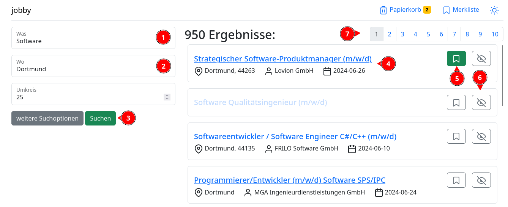
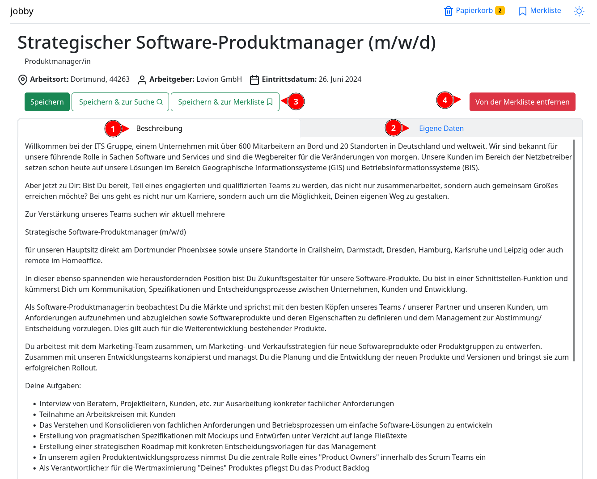
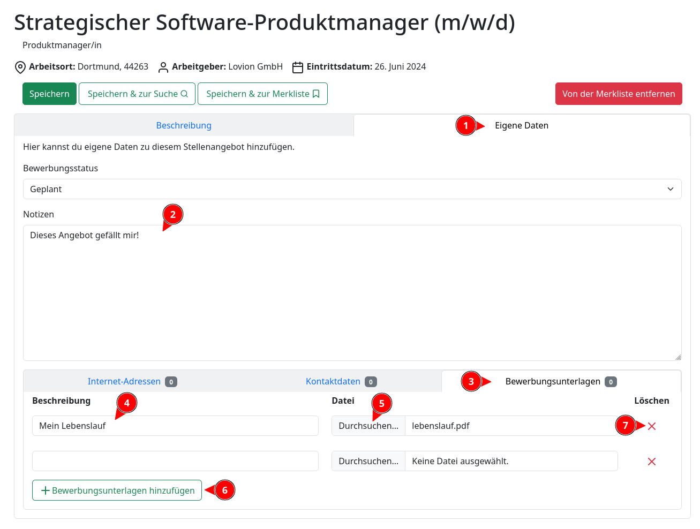
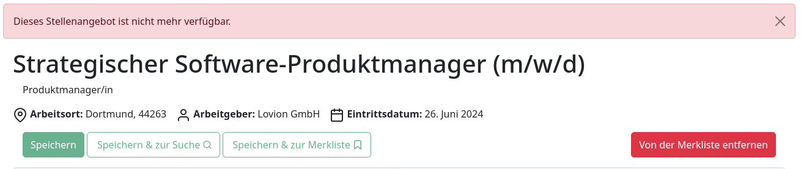
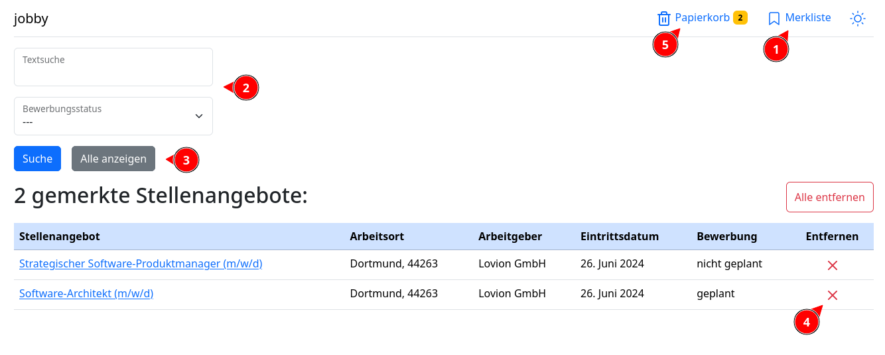

Index
Das ist Hilfe für die jobby Anwendung. Hier findest Informationen zu den folgenden Punkten:
Installation
Voraussetzungen
- Python
- Docker
- Linux: https://docs.docker.com/engine/install/ (oder mit Dockers convenience script)
Linux
Schritt für Schritt Anweisungen:
- Archiv von github herunterladen: Download
- Archiv entpacken:
mkdir jobby && tar -xf jobby-main.tar.gz -C ./jobby && cd jobby/jobby-main - Installationsskript ausführen:
python3 install.py --uid=$(id -u) --gid=$(id -g) --password=supersecret
Es wird dringend empfohlen, die UID und GID zu setzen, damit die von den Docker Containern erzeugten Dateien (wie z.B. hochgeladene Unterlagen) dem ausführenden Benutzer gehören und nicht etwa dem root-Benutzer.
Alternativ dazu, hier alle Befehle zusammen. Befehle kopieren und in ein Terminal einfügen:
curl -fsL https://github.com/Actionb/jobby/archive/refs/heads/main.tar.gz -o /tmp/jobby.tar.gz
mkdir ~/jobby && tar -xf /tmp/jobby.tar.gz -C ~/jobby && cd ~/jobby/jobby-main
python3 install.py --uid=$(id -u) --gid=$(id -g) --password=supersecret
rm /tmp/jobby.tar.gz
Die Seite sollte nun unter http://localhost:8787/jobby verfügbar sein.
Erzeugte Ordner und Dateien
Die folgenden Ordner werden bei der Installation erstellt:
- ein Datenordner (unter Linux standardmäßig
~/.local/share/jobby), welcher die Daten der Datenbank und die hochgeladenen Dateien enthält - ein Ordner für die Konfiguration (unter Linux standardmäßig
~/.config/jobby), welcher Dinge wie Datenbankpasswort und Umgebungsvariable für die Docker Container enthalten
Deinstallation
Wie man jobby wieder deinstalliert, findest du hier: Deinstallation.
Die Suche
Auf der Suchseite kannst du nach Stellenangeboten suchen. Dazu gebe im Suchfeld " was" (1) den Beruf oder ein Schlagwort ein. Im Feld "wo" (2) gibst du deinen gewünschten Arbeitsort ein. Mit einem Klick auf "Suchen" (3) startest du die Suche.

Jedes Ergebnis präsentiert einen Link und die wichtigsten Daten zu dem Stellenangebot (4). Der Link führt dich zu der Detailansicht des Stellenangebots führt. In der Detailansicht findest du unter anderem die Beschreibung des Stellenangebots und kannst deine eigenen Informationen hinzufügen.
Neben den Ergebnissen findest du außerdem noch zwei Knöpfe. Der erste Knopf mit dem Lesezeichen Symbol (5) fügt das Ergebnis zu deiner Merkliste hinzu. Mit dem zweiten Knopf (6) kannst du Ergebnisse für zukünftige Suchen etwas verstecken lassen.
Über der Ergebnisliste findest du Links (7) zu den Seiten, die die weiteren Suchergebnisse beinhalten.
Du kannst zu der Suchseite zurückgelangen, wenn du im Kopf der Seite auf "jobby" klickst.
Links
- Die Suchseite: http://localhost:8787/jobby/suche/
Detailansicht
Klickst du auf den Link eines Ergebnisses der Suche, oder auf ein Stellenangebot in deiner Merkliste, so gelangst du zu der Detailansicht dieses Angebots.

Hier kannst du dir alle verfügbaren Informationen zun dem Stellenangebot anschauen. Dazu gehört die detaillierte Job-Beschreibung (1) (falls vorhanden) und eventuell Daten, die du selbst hinzugefügt hast (2).
Es stehen drei Knöpfe zur Verfügung (3), mit denen du dir das Stellenangebot merken bzw. abspeichern kannst.
- "Merken" (bzw. "Speichern"): fügt das Angebot zu deiner Merkliste hinzu oder aktualisiert ein bereits existierendes Stellenangebot
- "Merken & zur Suche": speichert ab und schickt dich zu der Seite mit den Suchergebnissen
- "Merken & zur Merkliste": speichert ab und schickt dich zu der Merkliste
Befindet sich das Stellenangebot auf der Merkliste, kannst du den Knopf "Von der Merkliste entfernen" (4) benutzen, um das Angebot von der Merkliste zu entfernen.
Eigene Daten hinzufügen
Du kannst eigene Daten zu dem Stellenangebot hinzufügen. Klicke dazu auf den Reiter "Eigene Daten" (1). In dem folgenden Formular kannst du nun deine Notizen (2) und ähnliches eintragen.

Um zum Beispiel Bewerbungsunterlagen hochzuladen, klicke unten auf den Reiter "Bewerbungsunterlagen" (3). In dem optionalen Feld "Beschreibung" (4) kannst du eine kurze Beschreibung der Datei angeben. Mit "Datei" (5) kannst du die Datei auswählen, die du hochladen möchtest. Um weitere Dateien hochzuladen, klick auf den Knopf "Bewerbungsunterlagen hinzufügen" (6). Der "Löschen" Knopf (7) markiert eine Zeile zum Entfernen; wenn du das Stellenangebot abspeicherst, wird daraufhin diese eine Zeile gelöscht.
Stellenangebot nicht mehr verfügbar
Wenn das Stellenangebot nicht mehr verfügbar ist, sind die Speichern-Knöpfe gesperrt und eine Warnung wird angezeigt. Ein abgelaufenes Stellenangebot kannst du nicht zu der Merkliste hinzufügen:

Die Merkliste
Die Merkliste erreichst du, unter anderem, über den "Merkliste" Knopf (1) oben auf der Seite.
Hier findest du alle Stellenangebote, die du vorgemerkt hast. Du kannst auf ein gemerktes Stellenangebot klicken, um zu dessen Detailansicht zu gelangen.

Über der Merkliste findest du ein kleines Suchformular (2). Gebe in dem Feld "Textsuche" deinen Suchbegriff ein und klicke dann auf "Suche". Die gemerkten Angebote werden daraufhin nach dem Begriff durchsucht. Um wieder die vollständige Merkliste anzuzeigen, klicke auf den Knopf "Alle Anzeigen" (3).
Mit einem Klick auf den "Entfernen" Knopf, dem roten X, (4) kannst du ein Stellenangebot von der Merkliste entfernen.
Entfernst du ein Stellenangebot wird dieses direkt von der Datenbank gelöscht, es sei denn, du hast eigene Daten zu dem Angebot hinzugefügt. In dem Fall findest du das Stellenangebot im Papierkorb (5) wieder, um deine Daten zu erhalten.
Der Papierkorb
Den Papierkorb erreichst du, wenn du im Kopf der Seite auf den Knopf "Papierkorb" klickst.
Im Papierkorb befinden sich Stellenangebote, die nicht mehr auf einer Merkliste sind, aber nicht automatisch gelöscht wurden, weil sie noch Benutzerdaten beinhalten.
Um ein Stellenangebot endgültig zu löschen, drücke auf den "Löschen" Knopf mit dem roten X.
ACHTUNG: die Daten, die du bei dem Stellenangebot hinzugefügt hast, gehen dabei verloren. Die hochgeladenen Dateien
werden allerdings nicht von der Festplatte gelöscht. Diese sind weiterhin im Upload Ordner zu finden
(unter Linux standardmäßig ~/.local/share/jobby/media/uploads).
Support
Fehlermeldungen, Fragen oder Vorschläge können auf Github eingereicht werden: https://github.com/Actionb/jobby/issues
Deinstallation
In das jobby Source Verzeichnis wechseln und python3 install.py --uninstall ausführen.
ACHTUNG: Es wird ausgegeben, welche Ordner gelöscht werden - stelle sicher, dass diese nichts enthalten, das du unbedingt behalten möchtest! So werden zum Beispiel die Daten der Datenbank aber auch alle hochgeladenen Dateien gelöscht.
Optional: Docker Images löschen: docker image rm jobby-web:latest postgres:alpine
Danach kann das jobby Source Verzeichnis gelöscht werden.